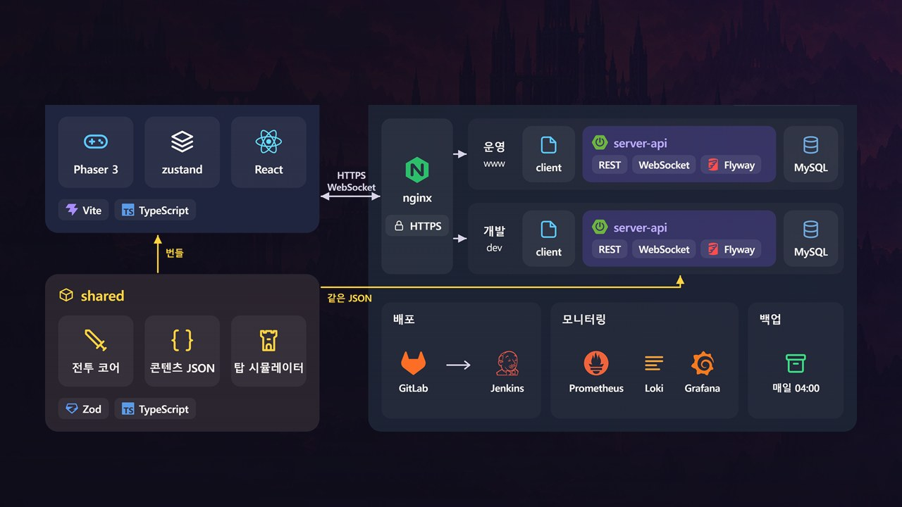
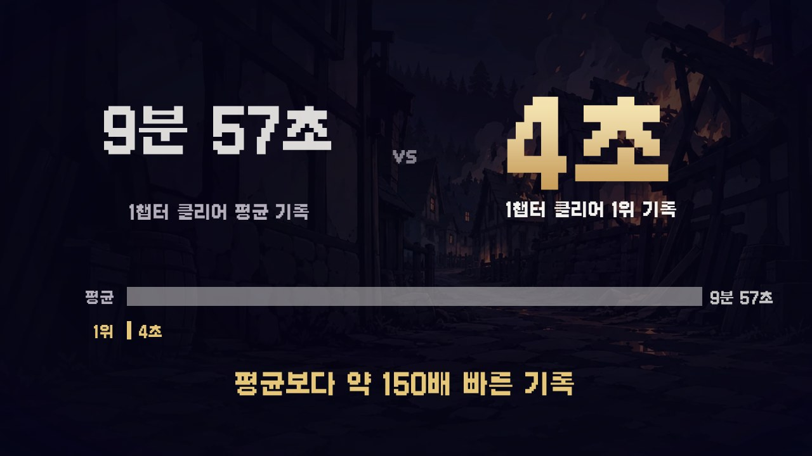
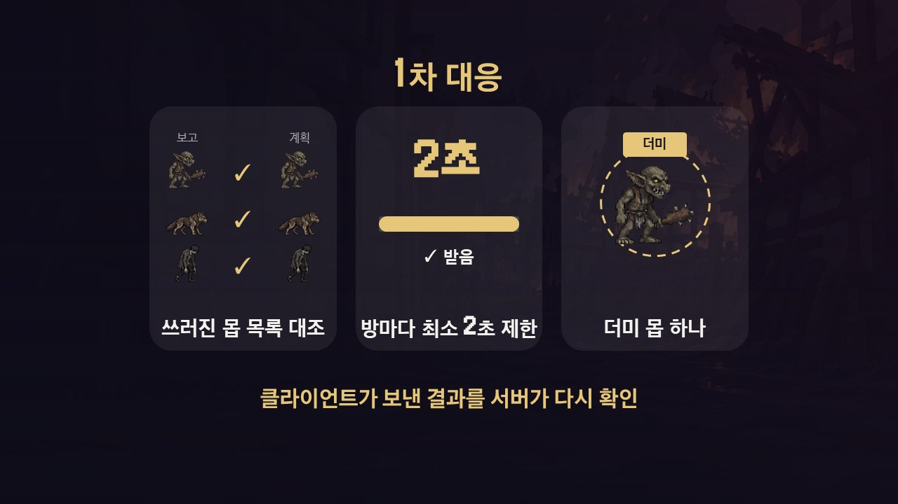
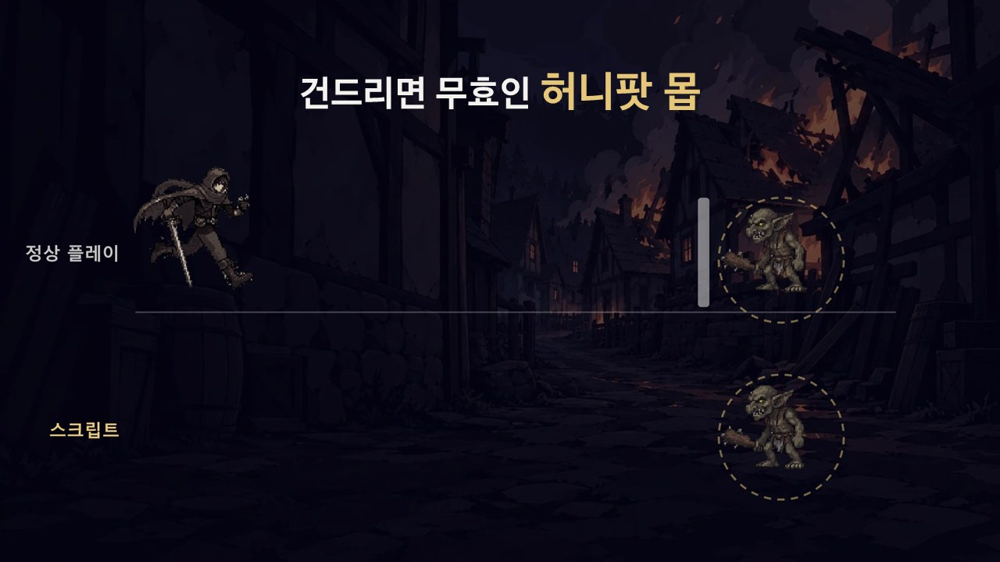
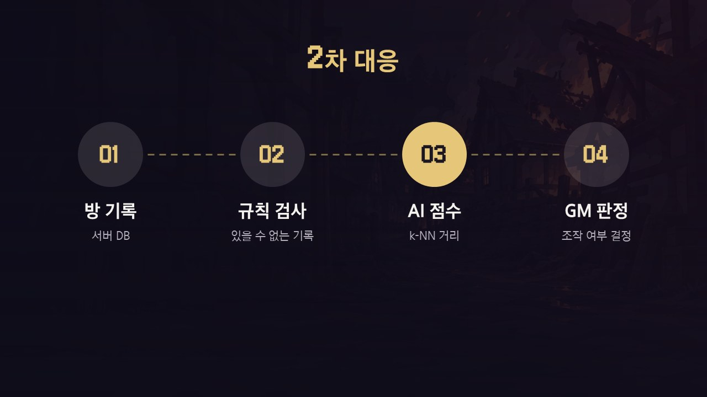

BACKEND · INFRA
브라우저 게임 클라이언트와 공용 콘텐츠 데이터, Spring Boot API 가 어떻게 이어지는지, 싱글 원정을 서버가 어떻게 검증하는지, 서버 한 대에서 운영과 개발 환경을 어떻게 나눠 배포했는지 정리했습니다.
ARCHITECTURE
구성 요소를 누르면 설명이 바뀝니다. 담당 표시는 직접 담당했거나 일부를 담당한 영역입니다.

SERVER AUTHORITY
원정은 싱글플레이 모드지만 랭킹과 영구 재화가 걸려 있습니다. 클라이언트가 보낸 결과를 그대로 저장하면 기록 조작이 다른 플레이어에게 피해가 될 수 있어서, 판정에 필요한 정보는 서버가 갖도록 설계했습니다. 원정 저장 구조와 API 명세, 서버 쪽 첫 구현(체크포인트, 정산)은 직접 설계하고 구현했습니다.
| 상황 | 서버의 처리 |
|---|---|
| 같은 요청이 두 번 옴 | 멱등 키로 저장해 둔 응답을 그대로 돌려줌 |
| 두 기기에서 동시에 저장 | 예상 revision 비교, 쓰기 세션, 행 잠금으로 하나만 반영. 다른 기기에서 이어 하면 이전 기기는 쓰기 권한을 잃음 |
| 랭킹 시간 | 서버 시계로 잼. 클라이언트는 일시정지와 재개 신호만 보내고 시각은 서버가 기록 |
| 오래된 클라이언트 | 규약 버전 헤더가 낮으면 426 응답으로 새로고침 안내 |
| 콘텐츠 판이 다름 | 새 원정을 막고, 진행 중인 원정은 새 판으로 옮길 수 있게 함 |
SECURITY
1차, 2차 대응과 허니팟, 이상 기록 탐지는 팀원과 협업했고, 그 바탕인 원정 저장 구조(계획 비공개, 체크포인트, 정산, 멱등 저장)는 직접 설계하고 구현했습니다.
1챕터 평균 클리어 시간은 9분 57초였는데 랭킹 1위는 4초로 집계된 사례가 있었습니다. 초기 서버는 클라이언트의 클리어 보고를 그대로 받아들였기 때문에, 싸우지 않고 클리어 요청만 연달아 보내도 다음 방으로 넘어갔습니다.

처치 목록을 서버의 원정 계획과 대조하고, 방에 들어간 뒤 서버 시계로 최소 2초가 지나야 클리어를 받게 하고, 방마다 더미 몹을 하나씩 섞었습니다.

첫 더미는 항상 같은 몹이라 콘솔에서 바로 걸러졌습니다. 이후 더미를 맵이 아닌 몹 목록에만 넣고, 다른 방의 진짜 몹 종류와 자리 이름, 드랍을 빌려 와 구별하기 어렵게 했습니다. 요청에 더미의 id 가 들어오면 그 원정은 무효가 되고, 계정과 방, 건드린 대상이 기록됩니다.

속도를 2배로 올리거나 피해를 10배로 키우는 조작은 결과만 봐서는 알 수 없습니다. 방마다 남긴 전투 기록에서 특징 10개(시간, 피해, 처치)를 뽑아 k-NN 거리로 이상 점수를 매기고, 점수가 높은 기록은 GM 이 직접 보고 판정했습니다. 조작 라벨이 없어 비지도 방식을 썼고, 속도 2배 조작을 정상 기록 1% 만 검토하는 조건에서 k-NN 은 93% 를 찾았습니다 (Isolation Forest 2%).

REALTIME
멀티 콘텐츠는 API 서버 안의 WebSocket 연결 하나에 방 종류를 나눠 올렸고, 공정성이 얼마나 중요한지에 따라 방식을 골랐습니다. 실시간 서버는 팀원이 주로 구현했고, 그 아래의 인증과 배포, nginx 의 WebSocket 경로를 담당했습니다.
| 콘텐츠 | 방식 | 설명 |
|---|---|---|
| 광장 | 중계 | 서버가 초당 15회 모아 바뀐 것만 다시 보내고, 받는 쪽은 120ms 전 시점으로 보간 |
| PvP | 서버 권위 | 초당 50회. 이동, 평타, 피격, 체력을 서버가 계산하고 스킬 명중 보고도 다시 판단 |
| 협동 생존 | 호스트 권위 | 같은 편끼리라 방장 브라우저가 몹을 계산하고 서버는 중계 |
| 라인 전쟁 | 락스텝 | 초당 20틱, 명령은 3틱 뒤 실행, 양쪽 상태 해시만 비교 |
| 그몽어스 | 서버 권위 | 초당 10회, 서버가 게임 상태를 계산 |
입장은 30초짜리 1회용 입장권으로 하고, 연결마다 보내기 큐와 받기 제한(초당 100개)을 두었습니다. 15초 동안 아무것도 오지 않으면 연결을 정리합니다.
INFRA
아무것도 설치되지 않은 서버에 Docker 를 까는 것부터 compose 설정, nginx, HTTPS, 도메인, Jenkins 자동 배포, 운영과 개발 환경 분리, DB 백업까지 직접 설계하고 구축했으며, 운영 기간 동안 서버 관리를 담당했습니다.
develop 병합은 GitLab 웹훅으로 개발 서버에 자동 배포하고, 운영은 담당자가 Jenkins 에서 직접 실행합니다. 학교 GitLab 은 저장소가 옮겨질 수 있어서 Git 호스트 전용 기능 대신 Jenkins 를 골랐고, 절차는 deploy.sh 한 파일에 모았습니다.
운영 41회, 개발 470회 넘게 배포했습니다. 무중단 배포가 아니어서 API 교체 때 약 15초 동안 요청이 실패했고, 이 정도는 감수하기로 했습니다.
| 문제 | 원인 | 조치 |
|---|---|---|
| 배포가 커밋 목록 출력에서 멈춤 | git log | head 가 SIGPIPE 로 끝나며 pipefail 에 걸림 | git log -n 20 으로 변경 |
| 웹훅 테스트 한 번에 되돌릴 이미지를 잃음 | 같은 커밋을 다시 빌드할 때도 rollback 태그를 옮김 | 같은 커밋이면 태그 유지 |
| 빌드 캐시가 104GB 까지 쌓임 | 정리 단계가 없었음 | 배포 끝에 캐시 20GB 상한 정리 |
| 웹훅이 갑자기 404 | GitLab 이 웹훅 주소를 바꾸며 비밀 토큰을 비움 | 토큰 재설정, 점검 절차 문서화 |